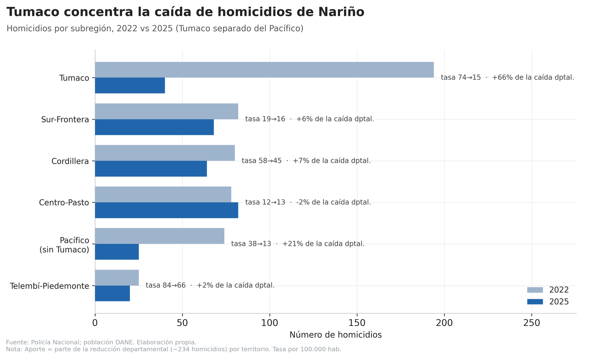
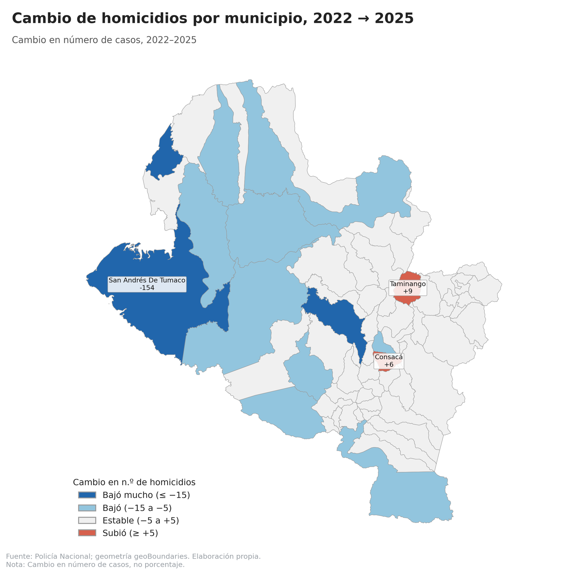
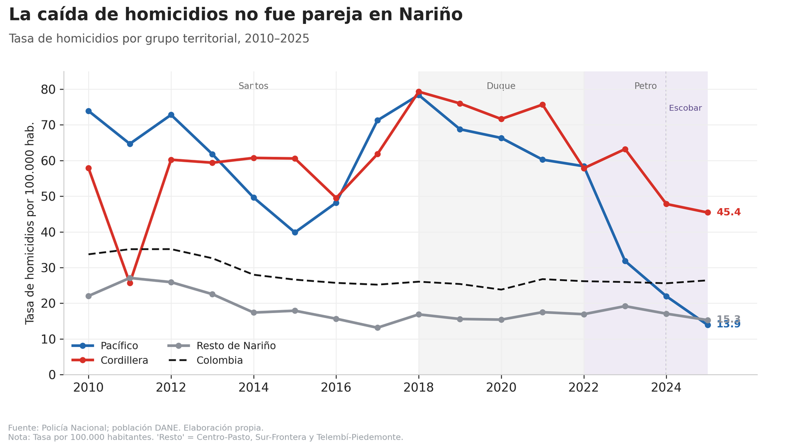
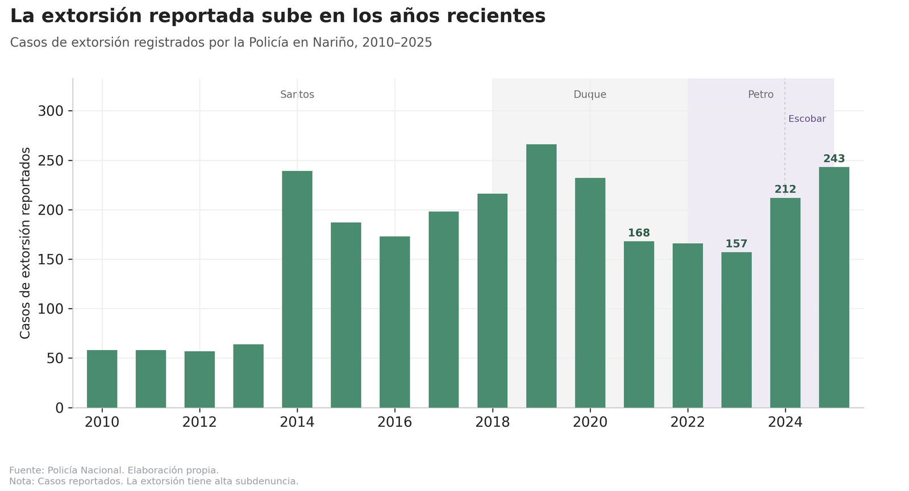
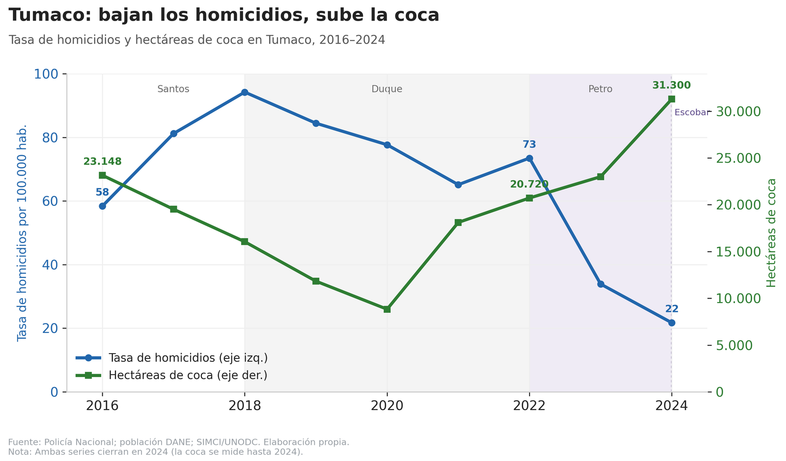
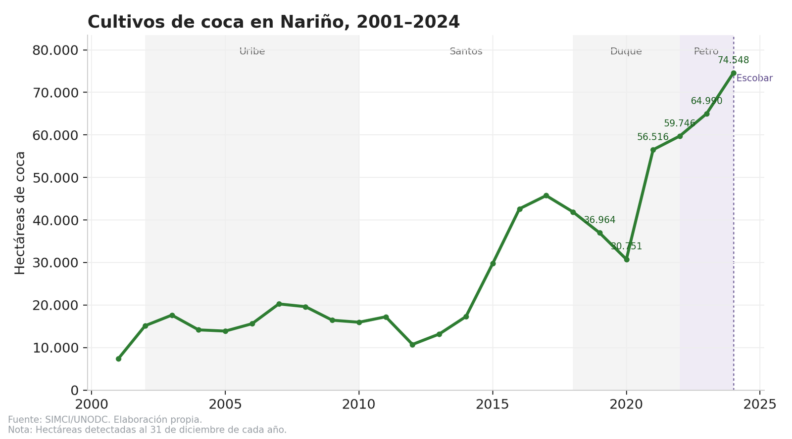
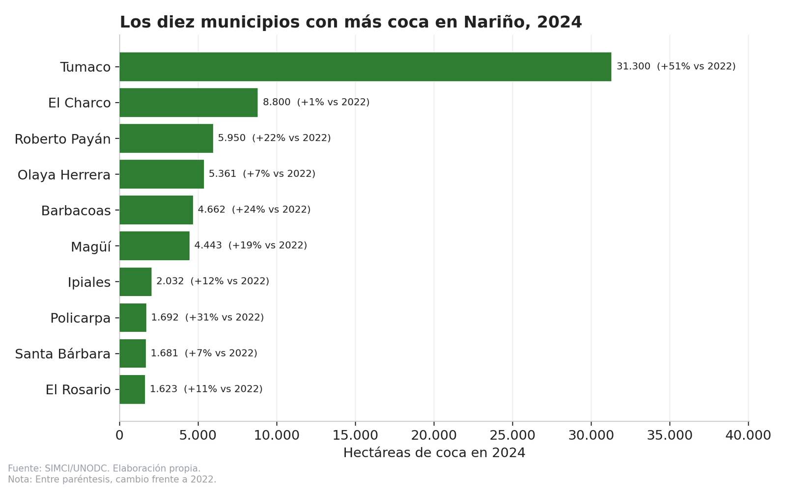
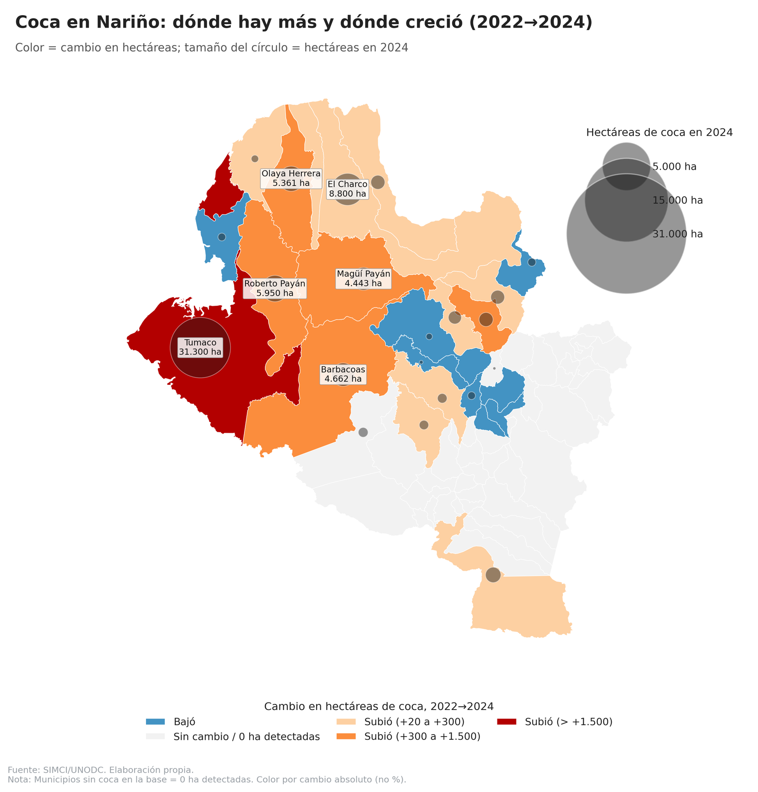
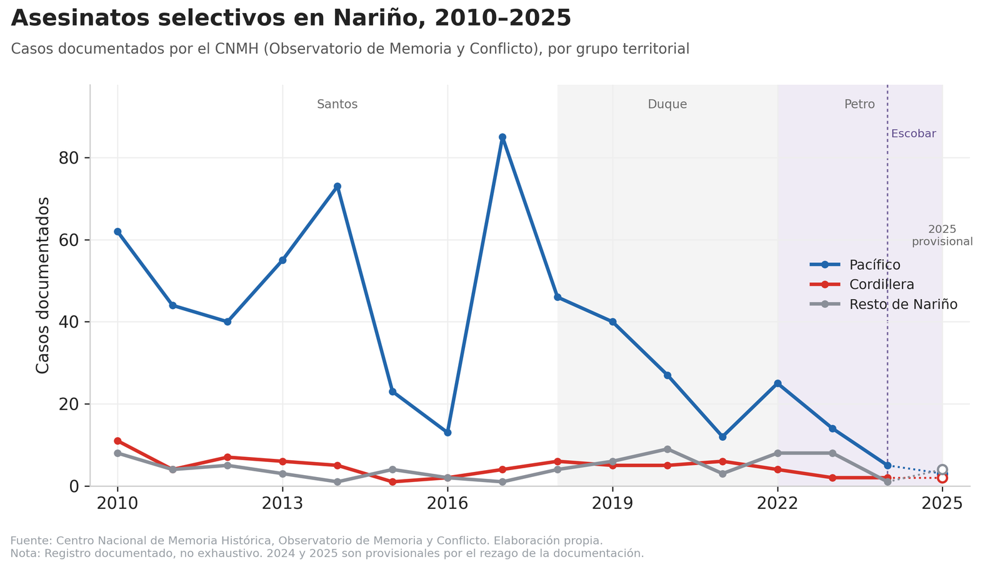
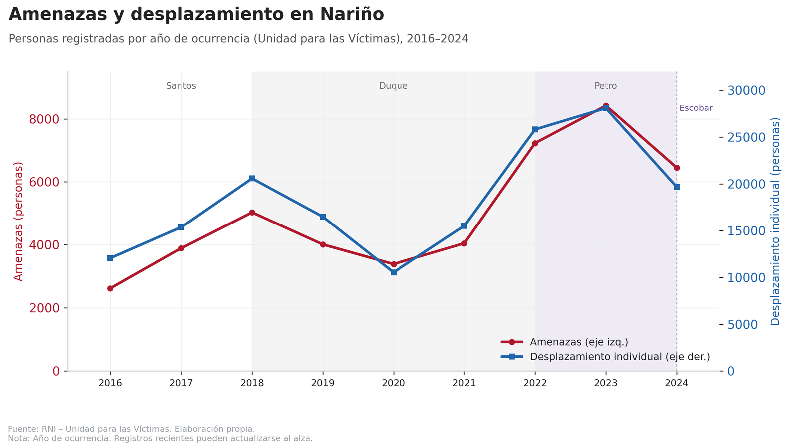

Nariño: paz territorial, homicidios, coca y otros indicadores
Los homicidios en Nariño cayeron a su nivel más bajo desde 2010, pero los cultivos de coca alcanzaron en 2024 su máximo histórico y la extorsión volvió a aumentar durante 2025. Qué muestran, y qué no, los indicadores disponibles.
Por Jorge Luis Congacha
La reducción de la violencia se ha convertido en uno de los principales argumentos con los que el gobernador de Nariño, Luis Alfonso Escobar, defiende la continuidad de su propuesta de Paz Territorial. En distintas intervenciones públicas ha insistido en que los procesos de diálogo adelantados en el Pacífico nariñense empiezan a reflejarse en una disminución de los homicidios, especialmente en Tumaco, uno de los municipios históricamente más golpeados por el conflicto armado.
Las cifras, en efecto, muestran una reducción importante de la violencia letal. Sin embargo, cuando se observan otros indicadores del conflicto, el panorama resulta menos uniforme. Mientras los homicidios caen, los cultivos de coca alcanzaron en 2024 su nivel más alto desde que existen registros del Sistema Integrado de Monitoreo de Cultivos Ilícitos (SIMCI); la extorsión volvió a aumentar durante 2025 y distintas entidades mantienen alertas por reclutamiento de menores, amenazas y por la persistencia de grupos armados en buena parte del Pacífico.
Este artículo no busca responder si esos cambios obedecen a la Paz Total del Gobierno nacional ni a la estrategia de paz territorial impulsada por la Gobernación de Nariño. Tampoco pretende establecer relaciones de causa y efecto. Su objetivo es más acotado: revisar qué muestran hoy los principales indicadores disponibles para entender cómo está cambiando el departamento y qué preguntas dejan abiertas
Los homicidios son, sin duda, el indicador donde el cambio resulta más evidente. Entre 2022 y 2025 el número de casos registrados en Nariño pasó de 533 a 299, mientras la tasa departamental descendió hasta 17,4 homicidios por cada 100.000 habitantes, el nivel más bajo observado desde 2010. La reducción comenzó después del pico registrado hacia 2018, pero durante los últimos años terminó por consolidarse, hasta ubicar al departamento incluso por debajo del promedio nacional.
Detrás de esas cifras hay un hecho que vale la pena resaltar. En un departamento donde durante años la violencia letal fue uno de los principales problemas de seguridad, registrar menos de 300 homicidios en un año constituye un cambio importante. No significa que el problema haya desaparecido, pero sí que la dinámica reciente es distinta a la observada durante buena parte de la última década.

Sin embargo, el promedio departamental esconde una realidad territorial mucho más desigual. La mayor parte de esa reducción ocurrió en un solo lugar: Tumaco.
Entre 2022 y 2025, cerca de dos de cada tres homicidios que dejó de registrar Nariño corresponden únicamente a ese municipio. Si el análisis se amplía al conjunto del Pacífico nariñense, allí se concentra aproximadamente el 87 % de toda la disminución observada durante ese periodo. En otras palabras, buena parte de la mejoría reciente del departamento depende de lo ocurrido precisamente en la región donde históricamente se concentraron algunas de las expresiones más intensas del conflicto armado.
No deja de ser un cambio llamativo. Durante muchos años Tumaco fue uno de los municipios que más empujó hacia arriba las cifras de violencia del departamento. Hoy ocurre prácticamente lo contrario. Mientras el Pacífico experimenta una reducción importante de los homicidios, la cordillera mantiene niveles considerablemente más altos y una disminución mucho menos pronunciada. Esto muestra que el departamento presenta dinámicas muy distintas dependiendo del territorio que se observe.
Precisamente es en esa región del Pacífico donde la Gobernación ha concentrado buena parte de su estrategia de paz territorial y de los espacios de diálogo con estructuras armadas ilegales. Los datos no permiten afirmar que exista una relación entre esos diálogos y la reducción de los homicidios, pero sí muestran que ambos procesos coinciden territorialmente y que, por ello, ese será uno de los aspectos que deberá evaluarse con mayor profundidad en los próximos años.


Esa diferencia entre territorios no es nueva ni reciente. Al observar la evolución de las tasas de homicidios por grupos —el Pacífico, la cordillera y el resto de Nariño— a lo largo de más de una década, se aprecia que el departamento nunca funcionó como un bloque homogéneo. Durante buena parte de los años 2010, el Pacífico nariñense registró las tasas más altas del departamento, muy por encima del promedio nacional, mientras el resto de Nariño se mantenía en niveles considerablemente más bajos.
El giro reciente es llamativo justamente porque altera ese orden. El Pacífico, que llegó a tener las tasas más elevadas, es hoy la región donde más rápido cayó la violencia letal, hasta ubicarse por debajo del promedio de Colombia. La cordillera, en cambio, siguió una trayectoria distinta: sus niveles se mantuvieron altos y su descenso fue mucho menos pronunciado, de modo que en los años recientes pasó a ser la zona con mayor tasa de homicidios del departamento.
Esa evolución ayuda a entender por qué hablar de “Nariño” en singular puede resultar engañoso. La mejoría reciente se explica sobre todo por lo ocurrido en el Pacífico, mientras la cordillera concentra hoy buena parte de la violencia letal que no cedió. Son dinámicas territoriales que conviene seguir por separado, porque responden a realidades distintas.

Hasta este punto, el balance parecería claramente positivo. Si la discusión se limitara únicamente a los homicidios, la conclusión sería relativamente sencilla: en Nariño hoy se mata menos que hace pocos años.
Sin embargo, la violencia no puede resumirse únicamente en ese indicador.
Cuando se observan otros delitos, la lectura comienza a cambiar. La extorsión, por ejemplo, volvió a aumentar durante 2025 y alcanzó uno de los niveles más altos registrados en los últimos años. Aunque este delito presenta importantes niveles de subregistro —muchas víctimas nunca denuncian—, la tendencia reciente constituye una señal de alerta que merece seguimiento.
Más interesante aún es que el comportamiento territorial de la extorsión no coincide con el de los homicidios. Mientras Tumaco registra una fuerte reducción de la violencia letal, el aumento de las denuncias por extorsión aparece principalmente en municipios del interior del departamento. Esto sugiere que las distintas economías criminales y formas de violencia no evolucionan necesariamente al mismo ritmo ni bajo las mismas dinámicas territoriales.
En otras palabras, reducir los homicidios constituye un avance importante, pero no implica automáticamente una mejora generalizada en todas las dimensiones de la seguridad.

La coca en Nariño
Si bien los homicidios parecen contar una historia, los cultivos ilícitos cuentan otra.
Según el monitoreo del Sistema Integrado de Monitoreo de Cultivos Ilícitos (SIMCI), Nariño cerró 2024 con 74.548 hectáreas sembradas de coca, la cifra más alta registrada desde que comenzó la medición hace más de dos décadas. Después de una reducción observada en 2020, el área cultivada volvió a crecer con fuerza hasta alcanzar un nuevo máximo histórico.
Tumaco resume buena parte de ese comportamiento. El municipio superó las 31.000 hectáreas sembradas y volvió a convertirse en el territorio con mayor área cultivada de coca en Colombia. Entre 2022 y 2024 el crecimiento fue cercano al 51 %, una expansión que contrasta con la caída simultánea de los homicidios registrada en ese mismo periodo.


La coincidencia resulta inevitable. El mismo territorio donde más disminuyó la violencia letal es también el territorio donde la coca alcanzó sus mayores niveles recientes.
Pero esa coincidencia no demuestra que exista una relación entre ambos fenómenos. Los datos disponibles simplemente no permiten responder esa pregunta. La evolución de los cultivos ilícitos depende de factores mucho más amplios: los mercados ilegales, las rutas del narcotráfico, la presencia de organizaciones armadas, la capacidad institucional, los precios internacionales y las decisiones de quienes participan en esa economía.
Lo que sí muestran las cifras es que la reducción de los homicidios y la evolución de las economías ilegales no necesariamente avanzan en la misma dirección.
Existe, además, una limitación importante. La información del SIMCI llega únicamente hasta el 31 de diciembre de 2024. Es decir, refleja el primer año completo de la actual administración departamental, pero todavía no permite establecer qué ocurrió durante 2025.
Ese detalle resulta especialmente relevante porque durante 2025 y 2026 tanto el Gobierno nacional como la Gobernación de Nariño anunciaron avances en programas de sustitución voluntaria de cultivos ilícitos. En el marco de los diálogos con la Coordinadora Nacional Ejército Bolivariano se habló de una meta de sustituir hasta 30.000 hectáreas, de las cuales alrededor de 15.000 corresponderían a Nariño. De igual manera, la Presidencia de la República informó avances del programa en municipios como Tumaco, Roberto Payán, Ricaurte y Samaniego.
Sin embargo, esas cifras corresponden a compromisos y metas institucionales, no a reducciones verificadas por el monitoreo independiente de Naciones Unidas. La sustitución anunciada, la erradicación manual y las hectáreas detectadas por el SIMCI son indicadores diferentes y no deben confundirse. Solo cuando se publiquen las cifras correspondientes a 2025 será posible evaluar si esos programas comenzaron a traducirse en una disminución efectiva del área cultivada o si, por el contrario, continuó la tendencia creciente observada durante los últimos años.


Otros datos de Nariño
Por otra parte, las estadísticas del Centro Nacional de Memoria Histórica muestran que el Pacífico nariñense ha concentrado durante décadas buena parte de los asesinatos selectivos documentados en el departamento. Aunque los registros recientes presentan una disminución, conviene interpretarlos con cautela porque se trata de una base histórica que incorpora nuevos casos conforme avanzan los procesos de documentación e investigación.
Más allá de esa limitación metodológica, la serie deja una conclusión clara: los territorios donde hoy se concentran buena parte de los desafíos relacionados con la coca y la presencia de grupos armados son, en buena medida, los mismos que históricamente soportaron las mayores expresiones del conflicto armado en Nariño.

Algo similar ocurre con otros indicadores menos visibles para la opinión pública. Las amenazas, el desplazamiento forzado individual y las alertas por reclutamiento de niños, niñas y adolescentes muestran que el conflicto mantiene expresiones distintas al homicidio. La Defensoría del Pueblo ha advertido sobre un incremento de este último fenómeno y señala a Tumaco como el municipio más afectado del departamento. Al mismo tiempo, diferentes organizaciones continúan ubicando a Nariño entre los territorios con mayor presencia de estructuras armadas ilegales y mayores riesgos para líderes sociales y firmantes del Acuerdo de Paz.
Estos indicadores, por sí solos, tampoco permiten concluir que la situación esté mejorando o empeorando de manera integral. Lo que muestran es que la violencia continúa transformándose y que su análisis requiere mirar mucho más que el número de homicidios.

Tres conclusiones
Los datos disponibles permiten extraer, al menos, tres conclusiones.
La primera es que la reducción de los homicidios constituye un avance real y significativo. Son vidas que hoy no se están perdiendo y ese resultado merece ser reconocido.
La segunda es que esa reducción se explica, en gran medida, por lo ocurrido en Tumaco y en el Pacífico nariñense, precisamente el territorio donde la Gobernación ha concentrado buena parte de su apuesta de paz territorial.
Y la tercera es que otros indicadores todavía muestran desafíos importantes. La coca alcanzó un máximo histórico en 2024; la extorsión volvió a crecer durante 2025; continúan las alertas por reclutamiento de menores y persiste la presencia de organizaciones armadas en buena parte del departamento.
En ese contexto, quizá la pregunta más importante ya no sea si la paz territorial funciona o no funciona. Los datos disponibles todavía no permiten responder esa discusión. La verdadera pregunta es si la reducción de los homicidios logrará consolidarse en el tiempo y si, al mismo tiempo, esa estrategia será capaz de transformar las economías ilegales que durante décadas han sostenido buena parte del conflicto en Nariño.
Esa respuesta, por ahora, todavía no aparece en las cifras. Pero probablemente comenzará a construirse cuando los próximos datos permitan saber si, además de reducir la violencia letal, el departamento logra también disminuir la dependencia de las economías ilícitas que han marcado su historia reciente.
Fuentes de los datos
- Policía Nacional. Homicidios y casos de extorsión registrados en Nariño.
- DANE. Proyecciones de población, usadas para calcular las tasas por 100.000 habitantes.
- SIMCI/UNODC. Hectáreas de coca detectadas, con corte al 31 de diciembre de 2024.
- Centro Nacional de Memoria Histórica, Observatorio de Memoria y Conflicto. Asesinatos selectivos documentados.
- RNI – Unidad para las Víctimas. Amenazas y desplazamiento forzado individual, por año de ocurrencia.
- geoBoundaries. Geometría municipal utilizada en los mapas.
- Defensoría del Pueblo. Alertas por reclutamiento de niños, niñas y adolescentes, citadas en el texto.
- Presidencia de la República. Avances reportados del programa de sustitución de cultivos, citados en el texto.